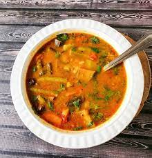

Sambar

Description
Sambar is a South Indian lentil and vegetable stew made with pigeon pea lentils, tamarind and a unique spice blend called sambar powder. It is a staple dish in South Indian homes and is also equally popular and loved by many.
Ingredients
- 1 tbsp Oil
- 1 large Onion peeled and chopped roughly
- 2 Tomato chopped
- 2 slit Green Chilli
- 1 Brinjal chopped
- 2 Carrot chopped
- 6 Beans chopped
- 1 cup Cucumber peeled and chopped
- 4 Ladysfinger chopped
- 1 Potato peeled and chopped
- 1 cup Raw Mango peeled and chopped
- Raw Banana / Plantain peeled and chopped
- 2 Dry Red Chilli
Steps
- Heat oil and add in onion, chilli and tomato. Saute it for 2 mins.
- Add in all vegetables and saute it for 8 to 10 mins.
- Add in water, Cover it cook for 10 to 15 mins till the veggies is cooked.
- Now add in cooked dal, sambar powder, salt and jaggery and mix well. Simmer this whole thing for 15 to 20 mins.
- Now make tempering by heating oil and crackling all whole spices. Fry this for a min. Pour this over the sambar and mix well.
- Add in coriander leaves and mix. Leave the pan covered till serving.
- Serve.